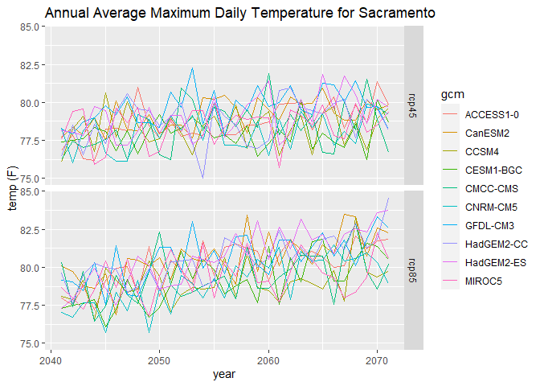

See also: https://ucanr-igis.github.io/caladaptr/
Features
caladaptr is an API client that makes it easier to work with data from Cal-Adapt.org in R. The niche of caladaptr is to bring data into R after which you can other packages to visualize and analyze:

caladaptr functions are designed to:
- be pipe friendly
- return tibbles for compatibility with tidyverse packages
- return values with encoded units (managed by the units package)
- accept and return
sfdata frames where spatial objects are needed - return cropped rasters as
starsobjects for user-friendly space time manipulation
Development Status
- query any of Cal-Adapt’s ~850 raster data layers ✔
- retrieve values by point, a preset area-of-interest (e.g., census tract), or a user-provided polygon ✔
- cache large queries in a local SQLite database ✔
- download cropped rasters (small to medium size areas) ✔
- download full rasters - not currently planned
- import station data (e.g., sea level rise) - not currently planned
‘Beta’ status means:
1) the package is still under development
2) the package is being updated fairly often
3) there’s a possibility that updates will not be backward compatible
4) user feedback and input is extremely welcome! (please join the caladaptR betaR club)
Installation
caladaptr is hosted on GitHub. To install it, you need the remotes (or devtools) package. Windows users also need to have RTools installed.
library(remotes) remotes::install_github("ucanr-igis/caladaptr")
General Workflow
In general, there are three steps to getting data via the Cal-Adapt API:
1) Create a ‘Cal-Adapt API Request’ object
2) Feed the API Request object into a function that fetches data (either values or cropped rasters)
3) Wrangle the data that comes back into the format you require
Example 1: Get Projected Annual Temperature at a Point Location
1) Create an API request object for a point location. Creating an API request object like filling in an order form. The request is essentially a description of the data you want, but by itself doesn’t fetch any data.
To get data from one of the LOCA downscaled CMIP5 climate projections from Scripps, there are a number of ‘constructor’ functions you can mix and match to create an API request object. Here we’ll grab 30 years of projected annual maximum temperature for a point location:
library(caladaptr) #> caladaptr (version 0.4.6) #> URL: https://ucanr-igis.github.io/caladaptr #> Bug reports: https://github.com/ucanr-igis/caladaptr/issues sac_tasmax_cap <- ca_loc_pt(coords = c(-121.4687, 38.5938)) %>% ## specify a location ca_gcm(c("HadGEM2-ES", "CNRM-CM5", "CanESM2","MIROC5", ## select GCM(s) "ACCESS1-0", "CCSM4", "CESM1-BGC", "CMCC-CMS", "GFDL-CM3", "HadGEM2-CC")) %>% ca_scenario(c("rcp45","rcp85")) %>% ## select emission scenarios(s) ca_cvar(c("tasmax")) %>% ## select climate variables ca_period("year") %>% ## select a temporal aggregation period ca_years(start = 2040, end = 2070) ## select start and end dates sac_tasmax_cap #> Cal-Adapt API Request #> Location(s): #> x: -121.469 #> y: 38.594 #> Variable(s): tasmax #> Temporal aggregration period(s): year #> GCM(s): HadGEM2-ES, CNRM-CM5, CanESM2, MIROC5, ACCESS1-0, CCSM4, CESM1-BGC, CMCC-CMS, GFDL-CM3, HadGEM2-CC #> Scenario(s): rcp45, rcp85 #> Dates: 2040-01-01 to 2070-12-31 #>
To help you pass arguments for the various constructor functions, caladpatr provides the following constants:
## Climate Variables cvars #> [1] "tasmax" "tasmin" "pr" "swe" ## Global Climate Models ## Note: the first 4 are the 'priority' models recommended under California's 4th Climate Change Assessment. gcms #> [1] "HadGEM2-ES" "CNRM-CM5" "CanESM2" "MIROC5" "ACCESS1-0" #> [6] "CCSM4" "CESM1-BGC" "CMCC-CMS" "GFDL-CM3" "HadGEM2-CC" #> [11] "ens32avg" "ens32max" "ens32min" ## Emission scenarios scenarios #> [1] "rcp45" "rcp85" "historical" ## Temporal resolution periods periods #> [1] "day" "month" "year" "30yavg"
2) Feed your API call into a function that fetches data, such as ca_getvals_tbl().
sac_tasmax_tbl <- ca_getvals_tbl(sac_tasmax_cap) #> | | | 0% | |==== | 5% | |======= | 11% | |=========== | 16% | |=============== | 21% | |================== | 26% | |====================== | 32% | |========================== | 37% | |============================= | 42% | |================================= | 47% | |===================================== | 53% | |========================================= | 58% | |============================================ | 63% | |================================================ | 68% | |==================================================== | 74% | |======================================================= | 79% | |=========================================================== | 84% | |=============================================================== | 89% | |================================================================== | 95% | |======================================================================| 100% dim(sac_tasmax_tbl) #> [1] 620 8 head(sac_tasmax_tbl) #> # A tibble: 6 x 8 #> id cvar period gcm scenario spag dt val #> <int> <fct> <fct> <fct> <fct> <fct> <chr> [K] #> 1 1 tasmax year HadGEM2-ES rcp45 none 2040-12-31 298.7698 #> 2 1 tasmax year HadGEM2-ES rcp45 none 2041-12-31 298.7150 #> 3 1 tasmax year HadGEM2-ES rcp45 none 2042-12-31 298.5987 #> 4 1 tasmax year HadGEM2-ES rcp45 none 2043-12-31 299.6766 #> 5 1 tasmax year HadGEM2-ES rcp45 none 2044-12-31 299.5327 #> 6 1 tasmax year HadGEM2-ES rcp45 none 2045-12-31 298.2451
3) Wrangle the data as much as needed for your visualization or analysis. Here we’ll add a column for Fahrenheit which is more familiar than Kelvin.
## Add a column with Fahrenheit units library(dplyr) library(units) sac_tasmax_tbl2 <- sac_tasmax_tbl %>% mutate(temp_f = set_units(val, degF)) head(sac_tasmax_tbl2) #> # A tibble: 6 x 9 #> id cvar period gcm scenario spag dt val temp_f #> <int> <fct> <fct> <fct> <fct> <fct> <chr> [K] [degF] #> 1 1 tasmax year HadGEM2-ES rcp45 none 2040-12-31 298.7698 78.11560 #> 2 1 tasmax year HadGEM2-ES rcp45 none 2041-12-31 298.7150 78.01705 #> 3 1 tasmax year HadGEM2-ES rcp45 none 2042-12-31 298.5987 77.80770 #> 4 1 tasmax year HadGEM2-ES rcp45 none 2043-12-31 299.6766 79.74794 #> 5 1 tasmax year HadGEM2-ES rcp45 none 2044-12-31 299.5327 79.48889 #> 6 1 tasmax year HadGEM2-ES rcp45 none 2045-12-31 298.2451 77.17127
Now we can make a plot:
library(ggplot2) ggplot(data = sac_tasmax_tbl2, aes(x = as.Date(dt), y = as.numeric(temp_f))) + geom_line(aes(color=gcm)) + facet_grid(scenario ~ .) + labs(title = "Annual Maximum Temperature for Sacramento", x = "year", y = "temp (F)")

Example 2: Query a Raster Series by its Slug
To query a raster series which isn’t one of the CMIP5 climate projections from Scripps, you have to specify the raster series “slug” (which is like an id key).
You can view all 850 raster series available thru the Cal-Adapt API and then use the filter button in the RStudio table viewer to find the slug of the dataset you want to query:
View(ca_catalog_rs()) ## From here you can use the filter buttons in RStudio viewer pane to find the slug you want.
Here we’ll get 30 years of historical observed annual precipitation from the Livneh dataset (slug = pr_year_livneh):
sac_precip_cap <- ca_loc_pt(coords = c(-121.4687, 38.5938)) %>% ## Sacramento ca_slug("pr_year_livneh") %>% ## Livneh yearly average precipitation historical ca_years(start = 1980, end = 2010) ## Start and end dates sac_precip_cap #> Cal-Adapt API Request #> Location(s): #> x: -121.469 #> y: 38.594 #> Slug(s): pr_year_livneh #> Dates: 1980-01-01 to 2010-12-31 #>
Fetch values:
sac_precip_tbl <- sac_precip_cap %>% ca_getvals_tbl() head(sac_precip_tbl) #> # A tibble: 6 x 5 #> id slug spag dt val #> <int> <chr> <fct> <chr> [mm] #> 1 1 pr_year_livneh none 1980-12-31 1.4778994 #> 2 1 pr_year_livneh none 1981-12-31 1.6469387 #> 3 1 pr_year_livneh none 1982-12-31 2.2625108 #> 4 1 pr_year_livneh none 1983-12-31 2.5765164 #> 5 1 pr_year_livneh none 1984-12-31 0.8227559 #> 6 1 pr_year_livneh none 1985-12-31 0.9679347
For more examples, including retrieving data for a preset area-of-interest (i.e., census tracts), see the ‘R Notebooks’ menu on the website.
Convenience Functions
- Plotting an API Request object shows the query’s location.
- You can view the Cal-Adapt catalog of raster series
ca_catalog_rs()
caladaptR betaR Club
The caladaptR betaR club is now accepting members! If you would like to be part of this elite cadre of caladaptr early adopters, you should join our beta testing program. Benefits of joining the caladaptR betaR club include:
- early notification of package updates
- 24/7 priority support
-
exclusive invitations to
caladaptrtutorials and user feedback sessions - an email forum to bounce ideas around with other caladaptR users and the package developer
To join the caladaptR betaR club, please subscribe yourself to the caladaptR email list.